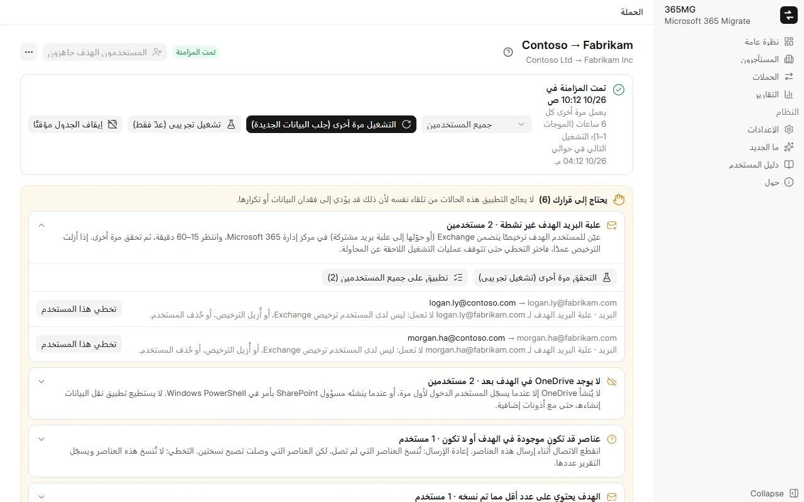
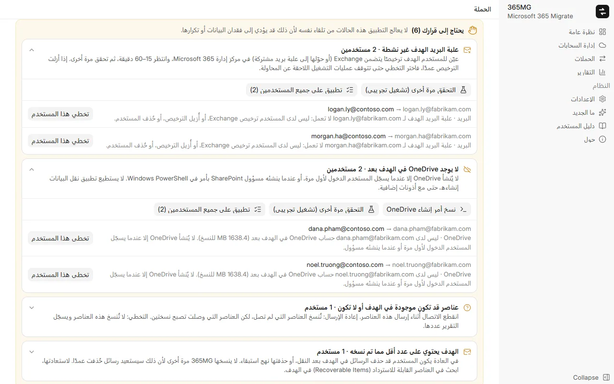

Microsoft 365 وGoogle Workspace
اربط أي عدد من مستأجري Microsoft 365 وحسابات Google Workspace، ثم انسخ في أي اتجاه: Microsoft ↔ Google، وMicrosoft → Microsoft، وGoogle → Google.
ترحيل Microsoft 365 ↔ Google Workspace
ينسخ 365MG البريد وجهات الاتصال والتقويمات وOneDrive وGoogle Drive والأقراص المشتركة والمجموعات بين Microsoft 365 وGoogle Workspace، في أي اتجاه، من كمبيوتر Windows الخاص بك. يحتفظ بسجل لكل عنصر، ويعمل مرة أخرى دون تكرار، ويتوقف ليسألك كلما كان هناك خيار قد يؤدي إلى فقدان البيانات أو تكرارها.

اربط أي عدد من مستأجري Microsoft 365 وحسابات Google Workspace، ثم انسخ في أي اتجاه: Microsoft ↔ Google، وMicrosoft → Microsoft، وGoogle → Google.
اختر المستخدمين المصدر باستخدام عوامل التصفية، وطابقهم مع المستخدمين الهدف تلقائيًا، وعيّن مجالاً هدفًا وترخيصًا بشكل مجمّع، وأنشئ المستخدمين غير الموجودين.
يصدّر كل عنصر ويستورده عبر واجهة API لعلبة بريد Exchange، مجلدًا تلو الآخر، مع سجل لكل عنصر بحيث يكمل التشغيل المتوقف من حيث توقف.
ينسخ الملفات والمجلدات، ويحتفظ بتاريخَي الإنشاء والتعديل، ويتحقق من كل ملف باستخدام quickXorHash، وينزّل الملفات الكبيرة على أجزاء بحجم 64 MB قابلة للاستئناف.
يعيد إنشاء قوائم التوزيع والمجموعات الممكّنة للبريد كمجموعات Microsoft 365 بالاسم المستعار والأعضاء والمالكين أنفسهم.
قسّم المستخدمين إلى موجات، واحسب ما سينسخه التشغيل دون كتابة أي شيء، ثم انسخ فعليًا واستمر في المزامنة وفق جدول حتى التحويل النهائي.
علب بريد أو حسابات OneDrive هدف غير موجودة، ومستخدمون أُعيد إنشاؤهم، وعناصر بنتيجة غير معروفة: يظهر كل منها في قائمة "يحتاج إلى قرارك" مع الإجراءات التي تحسمه.
المصدر مقابل المنسوخ لكل مستخدم وفي المجموع، والمستخدمون الذين يحتاجون إلى مراجعة، والمجموعات، والملاحظات؛ صدّر صفحة HTML مستقلة أو ملف CSV.
English وTiếng Việt و简体中文 و한국어 و日本語 وDeutsch وРусский وहिन्दी والعربية (من اليمين إلى اليسار).
كل وسيلة حماية جاءت من مشكلة حدثت أثناء نقل شركة تضم 350 مستخدمًا: علب بريد فقدت ترخيصها في منتصف الطريق، وحسابات OneDrive لم تكن موجودة بعد، واتصالات انقطعت أثناء الإرسال.

يوزّع المؤلف 365MG بنفسه. راسله للحصول على برنامج التثبيت أو عرض توضيحي أو مساعدة في الترحيل.